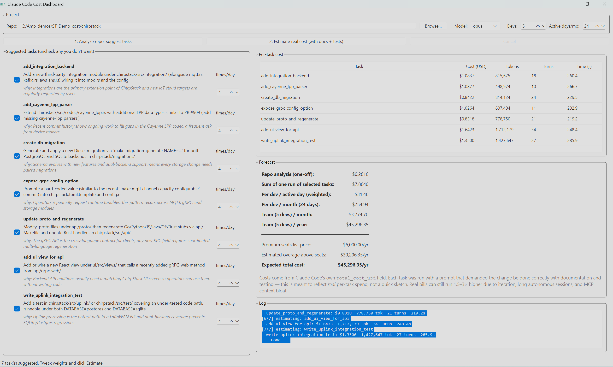

A desktop tool that points at one of your real repos, asks Claude to suggest realistic tasks for that codebase, and then measures how much it actually costs to do each task properly — with documentation and tests. Every dollar in the forecast comes from Claude Code's own per-call cost reporting.
Claude Code pricing is easy to underestimate. Quotes online range from "$30/dev/month" to "$15K for one bad agent run." Both are real — what matters is your repo and your tasks.
Buy seats based on a marketing tier, run for a month, get surprised by overage.
Take 15 minutes, run 5 representative tasks against a real repo, multiply by team size and active days. Defensible numbers.
Browse to any local Git repository — yours, a fork, or a representative open-source project.
Claude reads the code and suggests 5–7 tasks tailored to this repo (real file names, real refactor targets).
For each task you check, Claude does the work properly — code + docs + tests — and reports what it cost.
Per-task cost rolls up into per-dev/day, per-month, and per-year team spend.
Path to a Git repository on disk. Real-life meaning: a typical project your team would actually work on. Pick 2–3 representative repos (small lib, mid-sized service, monorepo) and average results.
sonnet — daily driver, balanced cost/quality. opus — deep reasoning, ~5× more expensive. haiku — cheapest, good for trivial tasks. Real-life meaning: change this to see how much your model choice changes the bill.
Team size. Real-life meaning: people who will actually use Claude Code daily — not your full headcount. Don't count managers or PMs unless they're shipping code.
Workdays per month a developer actually codes with Claude — not in meetings, not on PTO. Default 20. Lower (~15) for meeting-heavy teams; raise (~22) for heads-down teams.
Claude scans your repository (top-level layout, README, key source files) and returns a JSON list of tasks specific to this codebase.
One short Claude call. Typically $0.02 – $0.10 depending on repo size and model. Reported under "Repo analysis (one-off)" in the Forecast panel.
5–7 task suggestions with name, description, why-it-matters rationale, and a default frequency (times-per-day a real dev would do this kind of work).
// Example suggestion (real output, not a mock)
{ "name": "add_pagination_to_users_endpoint",
"description": "Add cursor-based pagination to the /api/users handler in api/handlers/users.go",
"rationale": "Endpoint currently returns all rows; risk of timeouts as table grows",
"weight_per_day": 1 }
Each suggestion is shown as a row you can uncheck (skip it) or whose times-per-day you can adjust. The default weight is Claude's guess; tune it to match your team's real workload.
Real-life meaning: "Yes, my team really does this kind of thing." Uncheck irrelevant suggestions — don't pay to estimate work that won't happen.
Real-life meaning: how many times per active workday a typical dev does this kind of task. PR review = 3. Architecture summary = 1. Bug hunt = 2. Honesty here is the whole game.
For each checked task, Claude is told to:
One row per task you estimated. Every column comes directly from Claude Code's JSON output (--output-format json).
total_cost_usd as reported by Claude — the API-equivalent dollar amount for this single task done end-to-end.
Sum of input + output + cache-read + cache-creation tokens. Real-life meaning: the more Claude had to read, the higher this is. A complex monorepo will dwarf a small library.
How many agent loop iterations Claude took. Real-life meaning: a proxy for task complexity. 1–3 = trivial. 10+ = Claude was thrashing.
Wall-clock seconds. Useful for capacity planning, not pricing — Claude is billed by tokens, not minutes.
Cost of step 1. You pay this once per planning session, not per task. Excluded from the recurring forecast.
Just the row totals from the table. Not the daily cost — that's the next line.
Σ (task_cost × times_per_day). Real-life meaning: what one developer's Claude bill looks like on a typical productive day.
Daily × active days. The number to compare against per-seat list prices.
Per-dev/month × number of devs. Use this when negotiating budget for the next quarter.
Annualized. Compare against your annual SaaS line item.
$100/seat/month × devs × 12 (annual billing). The sticker price of buying seats outright.
How much you'd burn beyond seat allowance at API-equivalent rates. Often $0 if your usage is moderate.

Using the exact numbers from the screenshot (7 tasks, weight=4 each, opus, 5 devs, 24 active days):
Three runs is a snapshot. A real dev does many more tasks every day. Plug honest weights in and the same dashboard gives you the yearly truth:
| Usage profile | $/dev/day | $/dev/year | 5-dev team / year | vs $6,000 seats |
|---|---|---|---|---|
| Light (3 tasks/day, sonnet) | $3.23 | $776 | $3,876 | under budget ✓ |
| Moderate (10 tasks/day, sonnet) | $8 | $1,920 | $9,600 | ~$3.6K overage |
| Heavy (this screenshot — opus, weight 4) | $31.46 | $7,549 | $45,296 | ~$39K overage |
| Heavy + agent teams + MCP (×2) | ~$60 | ~$15K | ~$72K – 90K | far above seats |
The same dashboard produces all four numbers — just change Model, weight, and Devs and re-run. Three real runs against your repo are worth more than any vendor quote.
From the same run: 10 task-runs total, $11.37 of API spend, ~9.8M tokens, ~39 minutes of Claude wall-clock.
Each task done properly with docs + tests is 1–4 hours of human work. 10 such tasks ≈ 20–40 dev-hours.
At $75/hr fully loaded: ~$1,500 – $3,000 of labor for $11.37 of API. ~150–250× cost ratio.
Reviewing & integrating Claude's output takes ~1–2 h per task. Net 3–6 hours/dev/day reclaimed at moderate use.
~80–150 dev-hours reclaimed for ~$200/week of API at the moderate profile. That's the line for finance.
Real bills can run 1.5–3× higher (occasionally 10×) for reasons this tool can't see:
Claude running unattended for an hour can rack up 100K+ tokens on a single task.
Each parallel agent has its own context window. Reports of single sessions hitting $8K–$15K exist.
At ~93% of context, Claude summarizes and restarts — each compaction costs 100–200K tokens.
Heavy MCP setups can start a session at 60K tokens before the dev types anything.
Rebuilding the same feature 3 times because the spec was unclear = 3× the cost.
Switching from Sonnet to Opus mid-project can multiply costs by ~5×.
# 1. Get Claude Code (npm) — authenticate it once npm install -g @anthropic-ai/claude-code claude # log in # 2. Get the dashboard git clone https://github.com/zuwasi/claude-code-cost-dashboard cd claude-code-cost-dashboard pip install -r requirements.txt # 3. Launch python claude_cost_dashboard.py # (or double-click run_dashboard.bat on Windows)
A desktop shortcut is created automatically when you build via the included run_dashboard.bat.
Pick a representative repo. Run the analyzer. Get a defensible number.
Source · License · Issues: github.com/zuwasi/claude-code-cost-dashboard
Use ← → Space · swipe · drag